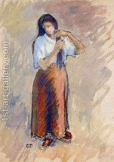

Shabbat 112 - And these are the knots...
In the list of the thirty-nine types of work that are prohibited on Shabbat we mentioned tying and untying a knot . Now the Talmud comes to give examples of which knots are prohibited: the camel driver's knot and the sailor's knot. Both are meant to be remain tied forever, and they are thus considered permanent knots. However, if one ties a knot to these permanent knots, such as a leash to the camel, then this is meant for a week or two, but not for all time, and therefore it is not prohibited by the Torah. However, the Sages prohibited even such knots, because if they were allowed, people might come to tie even permanent knots.
On the other hand, knots that are tied and untied every day are not prohibited at all. For example, a woman may tie the opening of her chemise, string of a hat, or a girdle (a wide belt tied by laces), straps of a shoe or a sandal; additionally, one may tie leather bags of wine and oil, or a pot of meat, where a piece of cloth was sometimes tied to its top.
Since the rule is that any knot that is tied and untied daily is permitted, then why did the Talmud have to give us all of the last examples? - They are all necessary. For example, in the case of a woman's chemise we are talking about a chemise with two straps, where we might have thought that she will tie one of them permanently, and only tie and untie the other ones - the Talmud thus informs us that we are not concerned about this possibility but rather assume that she will tie and untie both daily.
Art: Camille Pissarro - Young Woman Knotting Her Hair